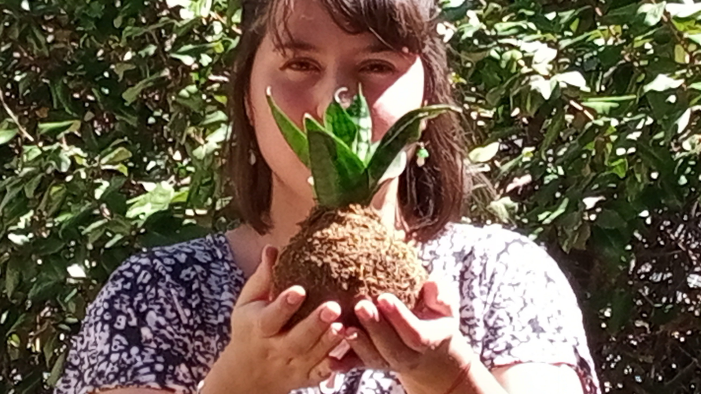

Como comenzo todo
De la ciudad a una naturaleza increible
En tiempos de pandemia surge este hermoso proyecto, cuando todo cambio surgió esta conexión con la naturaleza que me permitió encontrarme a mí misma y transformar mi departamento en un pequeño bosque.
Pronto ese instante raro de la vida paso a ser un momento y un ahora importante en mi vida, un poco de amor crear espacios pequeños con una naturaleza increible.

Bruja verde kokedamas
Mi nombre es Helen Romero, comencé hace dos años de manera autodidacta en el mundo de las kokedamas. Las kokedamas son una propuesta creativa que te da la solución para que puedas decorar y a su vez tener los beneficios de un pequeño jardín en tu hogar, oficina, balcón o evento.
Son de fácil cuidado e ideal para principiantes en jardinería, ya que su riego por inmersión evita que las plantas mueran por exceso de humedad.
No solo vendo el stock de kokedamas que armo por temporada, sino que además si tenes en tu hogar una planta de interior que la quieras transformar en kokedama, lo puedo armar y/o enseñarte a que lo hagas vos mism@ en un taller presencial dictado por mí. A su vez cada kokedama que llega a tu hogar viene con un instructivo que te iniciara en el cuidado de la misma.
También podes encontrarme en las ferias de Somos germinar, que es un programa de la subsecretaria de juventud de Neuquén.